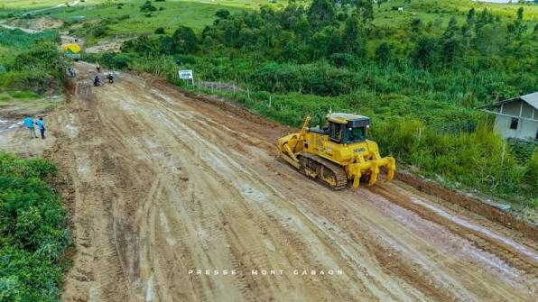
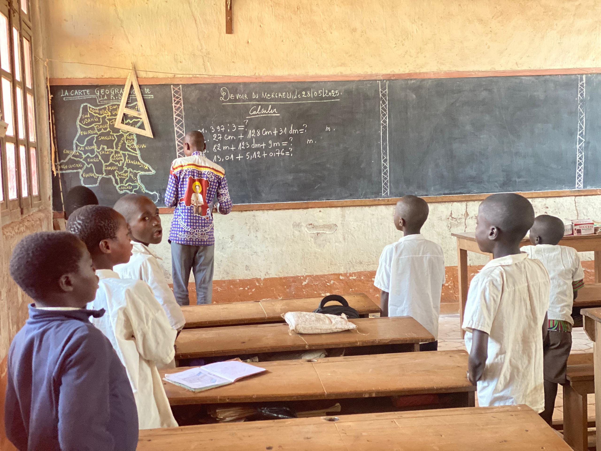
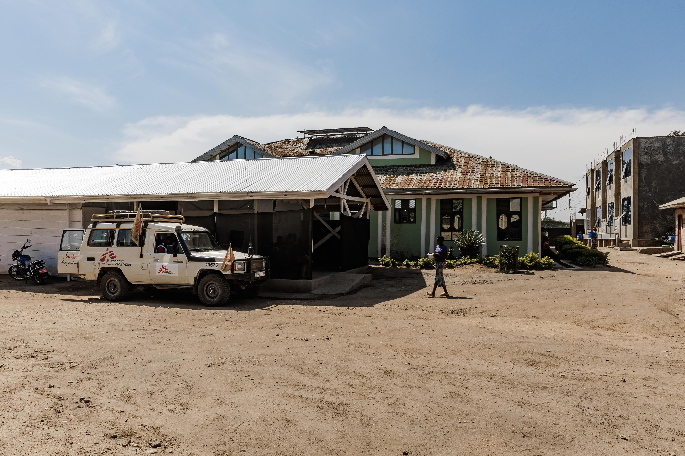
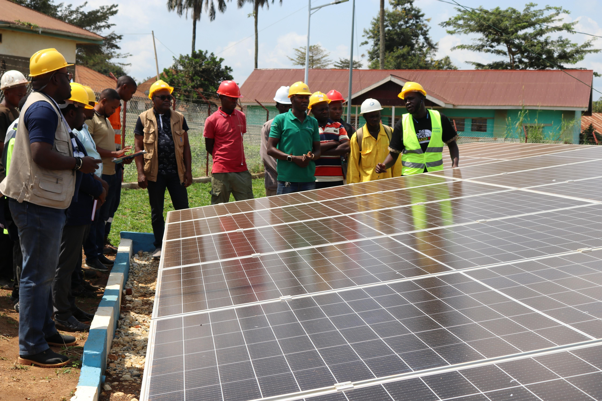
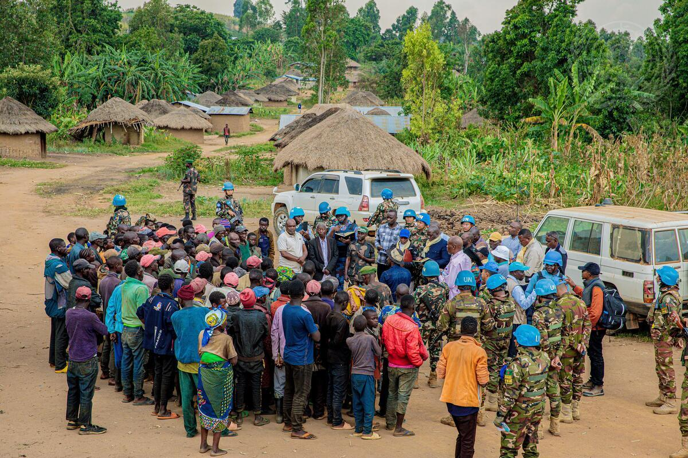

Vision for the Future
The future development of Ituri Province depends on improving infrastructure, strengthening public services, supporting economic activities and promoting peace. These priorities can help improve living conditions and create opportunities for communities across the province.

Infrastructure Development
Improving roads, bridges and public infrastructure can connect communities, support transportation and make access to markets and essential services easier.

Agriculture and Food Security
Supporting farmers with modern farming methods, training and better access to markets can increase food production, improve livelihoods and strengthen food security.

Education Development
Improving school facilities, providing learning materials and increasing access to quality education can give children and young people better opportunities.

Healthcare Improvement
Strengthening hospitals and health centres, improving medical equipment and supporting healthcare workers can improve access to essential medical services.

Water and Electricity
Expanding access to clean drinking water and reliable electricity can improve health, education, business activities and the daily lives of communities.

Peace and Security
Encouraging dialogue, reconciliation and cooperation among communities can support lasting peace, security and stability throughout the province.
Expected Benefits
These development priorities can contribute to job creation, better public services, stronger local businesses, improved living conditions and greater opportunities for future generations.
View Provincial Projects